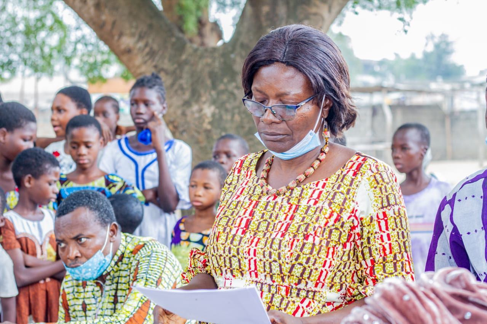

Sensibilisation accrue
Nous organisons des campagnes et des formations sur des sujets cruciaux tels que la santé sexuelle et reproductive, l'hygiène et l'assainissement, la prévention des mariages précoces, ainsi que la lutte contre l'exploitation et la traite des enfants.
Prise en charge médicale
Nous assurons des soins médicaux essentiels aux personnes défavorisées, en mettant un accent particulier sur le suivi de la santé des enfants, garantissant ainsi leur bien-être global.

Formation du personnel médical
Nous investissons dans la formation et le renforcement des compétences du personnel soignant, afin de garantir des services de santé de qualité et accessibles à tous.